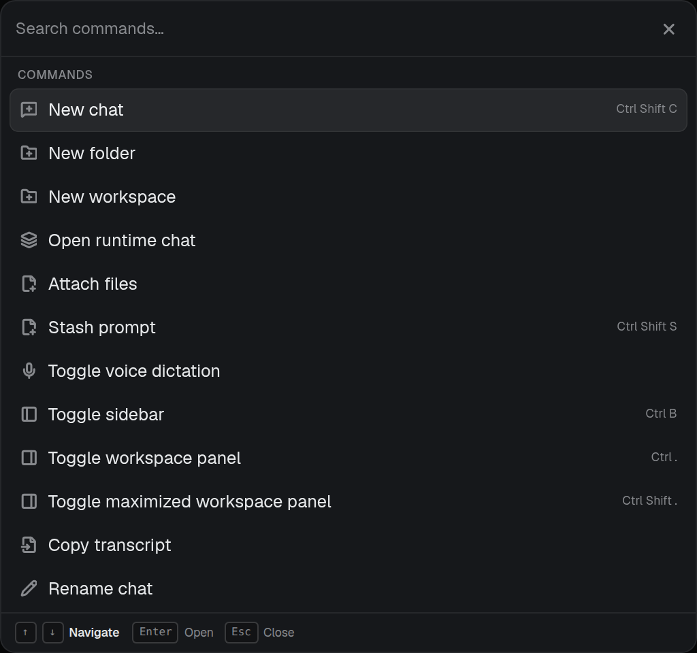
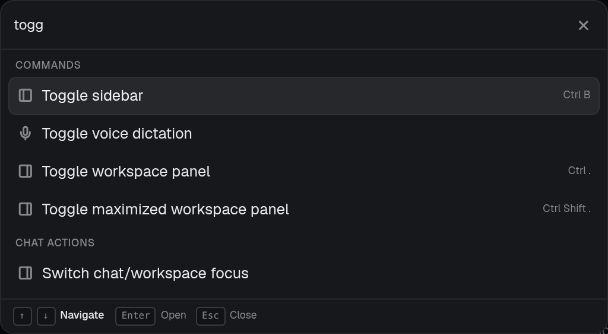
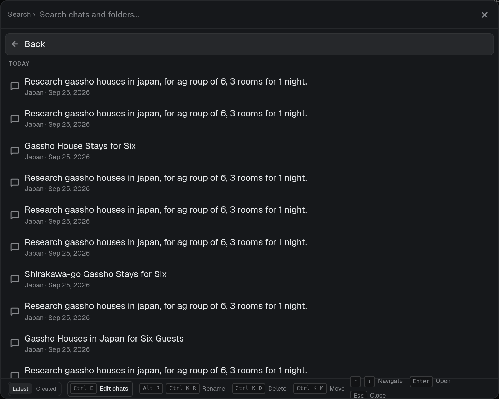
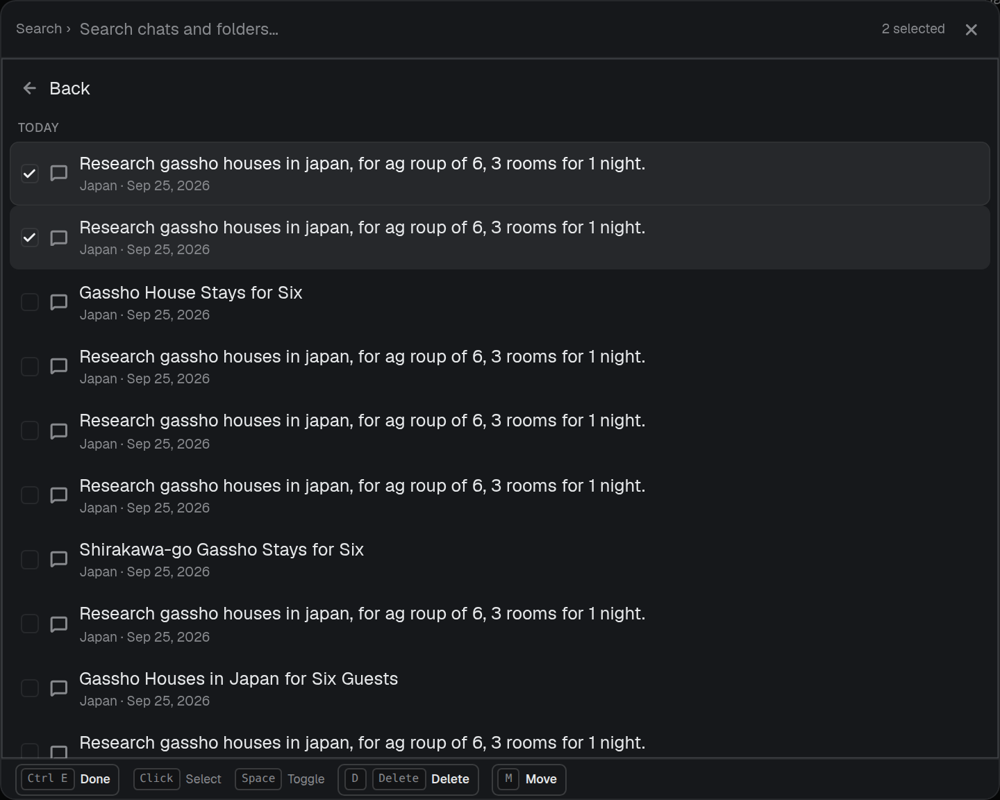
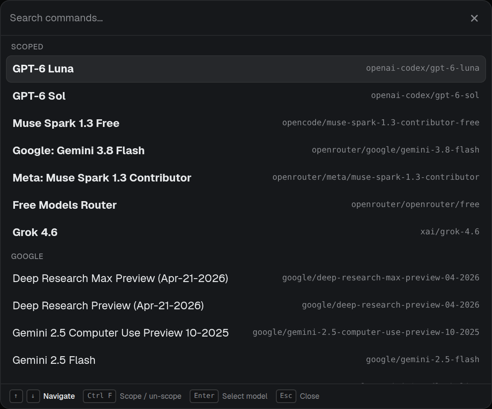

The command palette, chat search and model selector, redrawn in the language Conduit has grown into since they were built: a glass card like the leader menu and composer, the sidebar's rows and group labels, harness marks, and the orb. The shortcut rail at the foot stays, tidied. Each proposal is live HTML over a mock window, beside the palette as it is now.
COMMANDS › CHATS crumbs in the leader menu's style replace the Search › prefix and the big Back row. Esc or Backspace on an empty query goes up one level; a crumb goes straight there.Ctrl Shift C.

Search is its own surface (Ctrl Shift K), not a page of the command palette. The bar is a search icon, then chips, then the query. A scope is only ever a chip (in:Japan), and so are activity views (is:unread, is:running). Backspace on an empty query removes the last chip, and Esc steps out. The rail holds keys only. The preview column is allocated from the start and toggled with Ctrl P, remembered per device; below ~900px it is hidden.
Recent (five chats), then Folders: Chats, projects and workspaces in one list, each with a live or unread dot, a count and its last activity. Right expands a folder to five chats and a Browse all row. Enter on a folder scopes into it, and Ctrl Enter opens the project.

Enter on Japan (or Browse all) puts the chip in the bar and lists every chat in it. Here the preview column holds its space, still empty.
Edit is a full mode, so it keeps a checkbox column; the count sits in the rail, so nothing above the results moves.


It still fills the screen with a 6px inset. Rows are taller, keycaps and the rail are hidden, and chat search gets a two-button bar at the foot (Edit and sort).
styles.css command block): one .palette-material class owns the smoked glass, used by .command-shell and the delete confirmation. The shell is pinned at the top (align-items: start, top offset) instead of place-items: center. The dim behind drops from 55% to ~42%. It arrives with the leader menu's rise and fade (220ms) and leaves quickly.command-menu.tsx): crumbs from pageMeta replace .command-page-prefix, and the page-back row goes. A leading search icon at the root. Filter chips become mono tokens. The sort toggle moves here from the rail.<small> detail line removed. Keycaps come from the same formatter the rail uses. HarnessMark on chat rows. Day groups and short times from chatSortStamp. The current chat and running chats come from the sidebar's existing state.palette-search.ts): return the matched ranges with the rank so the label can wrap them.palette/command-registry.ts): split commands into This chat, Go to, Create, View and App. Context actions sort first when they apply..command-select-mark; a selected row takes the wash.command-hint-bar.tsx): the leader menu's keycap and hairline tokens. The bordered Edit chats button becomes a white actionable hint. Navigation keys are pushed right.Open choices: which material; the preview column now, later or never; sentence-case group labels (sidebar) or keep the uppercase tracked ones.